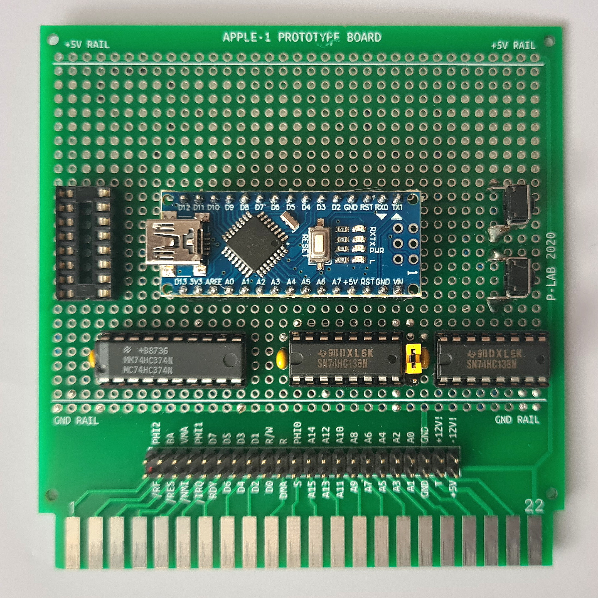
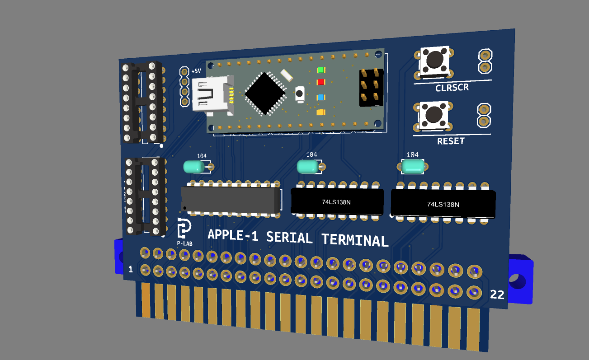
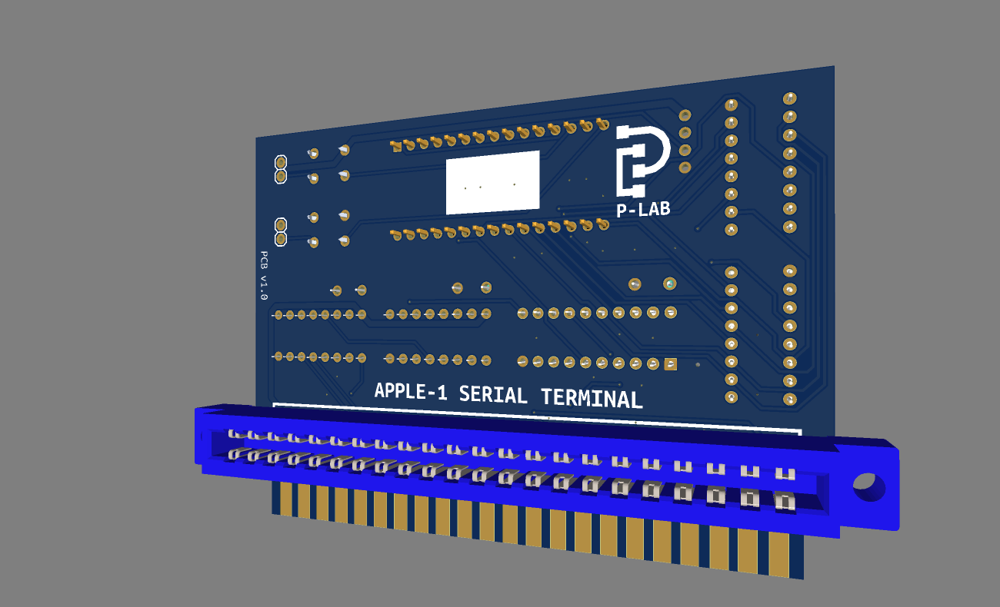
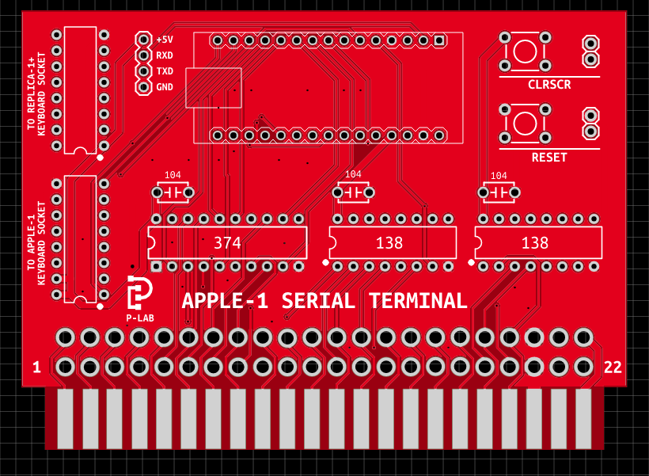

APPLE-1 TERMINAL - A FAST SERIAL TERMINAL FOR APPLE-1
  Documents hosted here:
PCB VERSION 1.01 (untested)
PCB/schematic changelog [txt]
PROJECT DESCRIPTION
Project Description ITA [pdf]
Terminal Extensions v1.01 ITA [pdf]
Project Description ENG [pdf]
Terminal Extensions v1.01 ENG [pdf]
DOCUMENTS
Arduino Nano source code [ino/txt]
Arduino Nano source code v1.01 [ino/txt]
File sender BASH script [text]
Fast Terminal patched INTEGER BASIC [zip]
Fast Terminal patched INTEGER BASIC audio file (load with E000.EFFFR) [wav]
Fast Terminal patched APPLESOFT BASIC for SD OS 1.2 [zip]
Schematic [png]
Gerber [zip]
EasyEDA project file [json]
Bill of Materials [txt]
External links:
Official Video [YouTube]
This work is licensed under CC BY 4.0